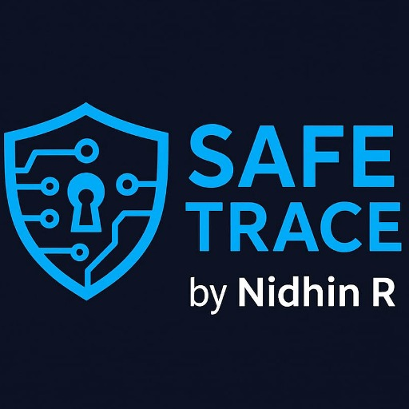

by NIDHIN R
SAFE TRACER by NIDHIN R
AI-Powered Crowdsourcing Platform for Online Child Sexual Exploitation and Abuse (OCSEA) Investigation
Useful for Investigation agencies
Loading AI-processed investigation clues...